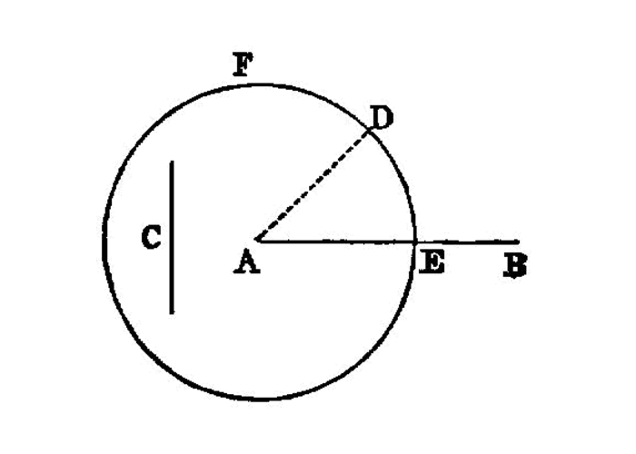

construct equal segments by section¶
I.3
Given two unequal straight lines, to cut off from the greater a straight line equal to the less.
—Euclid
{kind=link}
Let AB, C be the two given unequal straight lines, and let AB be the greater of them.
Thus it is required to cut off from AB the greater a straight line equal to C the less.
At the point A let AD be placed equal to the straight line C; [I.2] and with centre A and distance AD let the circle DEF be described. [I.post.3]
Now, since the point A is the centre of the circle DEF, AE is equal to AD. [I.def.15] But C is also equal to AD.
\(\therefore\) each of the straight lines AE, C is equal to AD; so that AE is also equal to C. [I.c.n.1]
\(\therefore\), given the two straight lines AB, C, from AB the greater AE has been cut off equal to C the less.
(Being) what it was required to do.
dependencies¶
[I.def.15]: /elem.1.def.15 “Book I - Definition 15” [I.2]: /elem.1.2 “Book I - Proposition 2” [I.post.3]: /elem.1.post.3 “Book I - Postulate 3” [I.c.n.1]: /elem.1.c.n.1 “Book I - Common Notion 1”